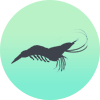
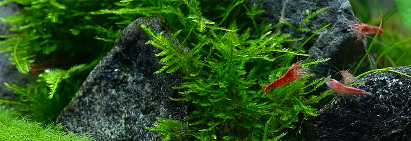
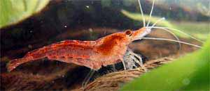
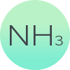
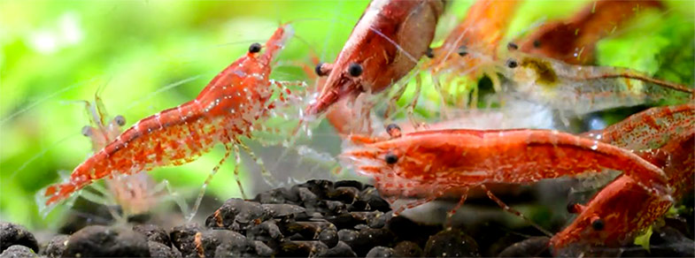
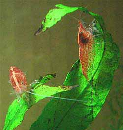

Red Cherry Shrimp
A GUIDE TO CARING & BREEDING FOR RED CHERRY SHRIMP RCS
Red Cherry shrimp or RCS are a breed of shrimp known as Neocaridina denticulata sinensis. Red Cherry shrimp exist in many colors in the wild but in the aquarium red is by far the most popular strain and this is attributed to their name. The bright red color is a result of years of selective breeding. The red cherry shrimp really stands out in the aquarium especially against plants and darker substrates.

Cherry shrimp are extremely hardy and condition tolerant when compared to other varieties of shrimp. This makes them an excellent beginner shrimp. They are easy to breed, maintain and they will naturally hide from predators. I would recommend purchasing Red Cherry Shrimp from a reputable breeder (such as from here) that has a healthy culture of solid red Cherry Shrimp & a reliable track record of postage.
Temperature ~80°F
- The optimum aquarium temperature for Red Cherry Shrimp is around 77-81°F (25-27°C). Higher temperatures will lead to faster growth and reproduction rates. However higher temperatures reduces dissolved oxygen and stocking will need to be lowered. 86°F (30°C) is the upper limit tolerated by RCS but at this point the water needs to be aerated and the tank cannot be overstocked. RCS can survive temperatures lower than 77°F but they are unlikely to breed and have a higher chance of catching disease.
pH ~6.8
- The pH for Red Cherry shrimp should be slightly acidic from 6.2 – 7.3. This range will maximize health, color and egg hatching rates. If you have higher pH water from the tap (7.5+) it is advisable to use a commercial substrate similar to ADA Amazonia. This will lower pH and provide a soft, dark substrate for the RCS. Alternatively a small bag of peat can be added to the filter to bring down the pH but may discolor the water.
Nitrite 0ppm
- Before adding any live organism to the aquarium, nitrite should be 0. After cycling, the nitrite levels should never be registered on a test kit. Possible elevated causes are overstocking or decaying plant or fish matter. Shrimp are highly sensitive to nitrite, ensure your cycle is complete and nitrite is a firm zero.

Ammonia 0ppm
- As with nitrite, ammonia should always be 0 post cycling. RCS are also highly sensitive to ammonia, ensure it is at 0ppm.

Nitrate >20ppm
- Nitrates should be less than 20ppm. It is not a requirement but it is highly encouraged to have nitrate levels of 0ppm. Adding plants to the aquarium and doing constant water changes are both excellent ways at reducing nitrate levels. Above 20ppm RCS are susceptible to disease and infertility.
Water Changes 30%
- Ideally the aquarium water should be changed at least 30% every week. A dechlorinate solution is a necessity as Red Cherry shrimp are sensitive to chlorine and heavy metals. It is a good idea to prepare the water a few days before and let the water 'age' with the de-chloriantor. This is to ensure any toxic compounds such as chlorine are able to break down and be removed. Using a spare glass heater to bring the changed water to the aquariums temperature will reduce shock on the RCS during the water change.

Adding the Red Cherry Shrimp
- It is important to remember that although CRS are hardy shrimp, they are still sensitive to fluctuations in water chemistry. Water stability is both the long and short term goal.
- Ensure the aquarium has been chemically tested and it is within the parameters listed above. Although Red Cherry shrimp are hardy and tolerant they are susceptible to rapid changes. To add the RCS to the aquarium first add them from the bag into a large bowl with the accompanying water.
- Using air-line tubing and a rubber band, create a siphon from the aquarium and kink the tubing by placing the rubber band over a bent section of the tube. Adjust the kink to allow a slow drip of 1 drop of water per second exiting the tube. Let this drip into the bowl for the next 20-30 minutes and monitor closely.
- After 20-30 minutes carefully use a soft mesh net to transfer the shrimp into the aquarium. Be sure to cover the net with one hand when moving the RCS from the bowl as shrimp jump and can escape the net.
- Cherry shrimp like many fish will become stressed if the water quality is not optimal. They are usually very active and early warning signs become apparent if they will not move, or they swim up to the surface and then float. Avoid this situation by conducting constant water tests, using appropriate dechlorinates and ensuring the tank has completed cycling.
- If a situation does arise check the water immediately, perform a water change and try to identify the problem. If you have more than one aquarium moving the RCS to a suitable temporary home, even if the conditions are sub-optimal is often far better than leaving them in a toxic aquarium.
- Here is a link to a full guide to setting up a shrimp tank. Including setup instructions, cycling and choosing the correct hardscape in much greater detail.

Feeding Red Cherry Shrimp
- You will need to constantly feed your RCS as you would with any aquarium pet. They will eat minimal algae in the aquarium and are omnivorous requiring a balanced diet and supplementary food daily. Feeding is especially important in relation to breeding and preventing sterile births and healthy young.
- A balanced diet of fresh vegetables and processed foods are recommended for RCS. Vegetables such as boiled zucchini and spinach will be consumed and are excellent for Red Cherry shrimp health. Be sure to boil these for a number of minutes otherwise they will float on the surface out of reach.
- Processed store bought foods such as flakes, pellets and specialized shrimp foods are important in providing the RCS with a balanced diet and giving them that rich red color. One of the highest quality foods I generally recommend is the Shirakura Red Shrimp Food as it will not cloud your tank & has been specifically engineered in Japan exclusively for aquarium shrimp. If there is excess food in the tank from the last feeding, remove the food and add smaller amounts at feeding time. This will help with keeping ammonia and nitrites at 0.

Dangers of RCS in the Planted Aquarium
- Shrimp and planted tanks are a perfect compliment for each other in some ways and a disastrous combination in others. When it comes to disasters and keeping shrimp, CO2 injection is probably the biggest killer. This is especially true for DIY CO2 setups.
- When CO2 is added to aquarium water it dissolves and is absorbed by the plants for photosynthesis. When there is no light source (at night for instance) CO2 is not utilized by the plants and instead forms carbonic acid in the water. This can plummet and swing the pH sometimes dramatically from day to night. Red Cherry shrimp, although tolerant can often not handle the swing in PH nor the lack of oxygen.
- Using CO2 injection and caring for RCS needs to be done carefully. This may not be as simple as using a solenoid valve to only inject CO2 during light hours. Horror stories have arisen where hobbyists have forgetting to reset there light timers. In the morning when the lights do not turn on but the CO2 starts bubbling there is danger for a giant PH swing and a high risk of stressing your RCS.
- Fertilizer additives need to be carefully checked before adding them to a Red Cherry shrimp aquarium. Certainly all copper and heavy metal additives should be avoided.
- Aside from this the moss and plants will provide RCS with an underwater playground to breed and flourish. Planted tanks are also great for RCS offspring. Even with small fish in the tank RCS are known to breed fast enough to increase population in a densely planted aquarium.

Tank mates & Compatibility
- Red Cherry shrimp are best kept in a species only aquarium. They breed quickly, are fairly hardy and interact well with their own species. They lack proper defenses to be housed with larger fish and are not much more than live fish food.
- Keeping away from any predatory fish such as Discus, Oscars, Cichlids, Arowanas, Angel Fish and other large species is a must. Red Cherry shrimp are comparatively cheap but extremely expensive as accidental fish food.
- RCS breed readily and raising young is an exciting and interesting prospect. With other tank mates this is more difficult as even the smallest tetras will be able to consume shrimp offspring.
- Housing RCS with other shrimp is possible however they prefer to interact with their own species. A species tank is advisable to prevent dominance disputes and raising fry.
- When stocking these shrimp it is important to remember they have almost no bio-load. Up to 1000 in a standard sized 55 gallon aquarium would have little strain on the filter bacteria. Having many shrimp can post the problem of overfeeding, it is very important to remove uneaten portions of food to keep ammonia under control. Even though technically you could stock an unlimited number of shrimp, it is wise to have 2-5 per gallon of water. Thats a lot of shrimp!
Breeding Red Cherry shrimp
- RCS are among the most simple of freshwater shrimp species to breed in the aquarium. By slowly moving the water temperature a little higher to around 81-82°F (27°C) it simulates summer environments to RCS and naturally prompts the beginning of breeding.
- It is important to fill your tank with patches of thick plant cover. This will give the Red Cherry shrimp piece of mind and safety needed for breeding. In tandem with raising the water temperature, raising the relative hardness of the water can spur breeding. Harder water signals higher levels of calcium and minerals necessary for maturation of eggs. This can be obtained by adding a small bag of limestone chips to the filter.
- Within weeks there should be obvious signs of berried females with visible rows of hundreds of eggs beneath their tails. They will constantly fan the eggs to ensure they remain oxygenated and healthy. At this point it is extremely important to use an aerator instead of a filter. Alternatively thick layers of filter wool can be used to block and slow any large intake siphons.
- If you find your shrimp are becoming pregnant but you never see any young, make sure the temperature is remaining around and be sure to check filter intakes are covered by a stocking or foam or something to prevent the babies being sucked inside.
- If you find your shrimp are becoming pregnant but you never see any young, make sure the temperature is still around 81-82°F. Also be sure to check filter intakes are covered by a thick stocking or wool as mentioned earlier.
- The baby Red Cherry shrimp will be born straight into miniature versions of the adults. There is no median phase for the shrimp. Only when they grow into adults will you be able to identify their sex. Males have lighter texture and less red coloration to the females. Females can generally be larger and become a deep crimson red during pregnancy.
- Purchase at least 10 shrimp when starting out. RCS are readily available from LFS's and other hobbyists. They are very reasonable in price and very easy to keep. 10 is a staple recommended amount to provide good ratios of both sexes with healthy fertility.